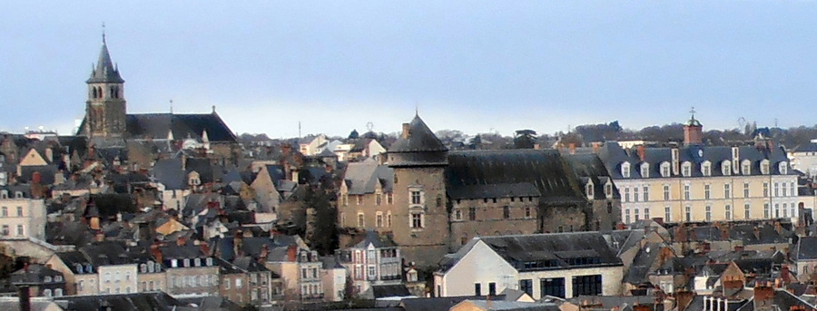

QUI
ES
TU
?
Vous êtes étonnés, avouez-le. Déçus, peut-être ? On vous livre un prénom et un nom, autrement dit une identité en bonne et due forme, la promesse d'un dévoilement. Vous cliquez pour découvrir au moins le portrait de l'individu en question et que voyez-vous : trois monuments urbains alignés comme dans une citation ternaire. On vous a trompés, pensez-vous. Encore un effet de ce qu'on appelle aujourd'hui : la communication, la publicité ; hier : la réclame, la propagande. On appâte une clientèle ciblée avec la promesse d'assouvir sa légitime curiosité — « On va enfin voir quelle tête il a ! » — et on se retrouve devant une illustration de dépliant touristique.
Rien de si impersonnel pourtant. Cette photo que j'ai prise de mon balcon représente un spectacle permanent, pour moi quotidien. Un symbole trinitaire et aussi un trio de valeurs à la fois universelles et personnelles. Rien de révolutionnaire non plus seulement la reprise et le rappel de droits et de devoirs gravés dans la pierre au fil des siècles.
Vous vouliez mon portrait ? Vous avez mieux : un idéal, quasi complet, en images, psychologique, sociologique, philosophique… Tout le reste n'est qu'apparence, sans trop d'intérêt.

LA CATHÉDRALE occupe une situation élevée. Elle domine l'ensemble de la ville. Elle symbolise le pouvoir spirituel après avoir, pendant des siècles, figuré aussi le pouvoir temporel avec les pouvoirs exécutif, législatif et judiciaire. Si la révolution française et la loi de séparation ne lui reconnaissent plus officiellement aucun pouvoir, rien ni personne ne peut empêcher un citoyen d'obéir aux lois de l'Église. Du reste, à mon sens, c'est le Décalogue qui a fondé notre droit civil.

LE CHÂTEAU est le siège, pendant des siècles, du pouvoir exécutif chargé de mettre en œuvre les lois en vigueur. Conservé, rénové, parfois embelli il continue à en imposer au point de forcer le respect malgré le renouvellement des autorités et les changements de régime. Il appartient à Montesquieu d'avoir défini ce qu'il appelle « l'exécution » dans son célèbre Esprit des lois, publié en 1748. Pour résumer très brièvement, c'est avant tout la puissance exécutive de l'État dont la compétence relative intéresse le droit des gens, notamment leur sûreté. À l'État appartient le droit d'imposer à tous des règles communes soit par la biais de la « sagesse humaine », soit par la contrainte si nécessaire. C'est par cette puissance exécutive que l'État peut engager la guerre ou maintenir la paix.

LE PALAIS DE JUSTICE qu'on nomme à Laval le « Château neuf » représente le troisième pouvoir. Sur la photo, la justice est donc à droite — c'est étymologiquement sa place : « la place du Droit. Hier, un ancien haut responsable de l'exécutif a été condamné à une peine de prison ferme. Les politiciens de droite ont accusé les magistrats d'être de gauche. Peu importe, du reste, puisque la justice est indépendante de l'exécutif et du législatif. Pour comprendre ce qu'est la justice il faut réfléchir au vocabulaire. On n'a pas justice ; il faut la demander, la réclamer à des professionnels qui ne la donnent pas mais qui la rendent. D'ailleurs on ne la reçoit pas non plus, on l'obtient. Comme la paix et la guerre, les juges font justice à des gens qui n'ont pas le droit de la faire et encore moins de se la faire. Je vous laisse réfléchir aux conséquences réelles de ce paradigme lexical.

🕊 Est venu le temps du recueillement.
Je le partage avec vous, intensément, dans l'ombre.
Merci d'être là ! 🕊
←Retour aux victimes>